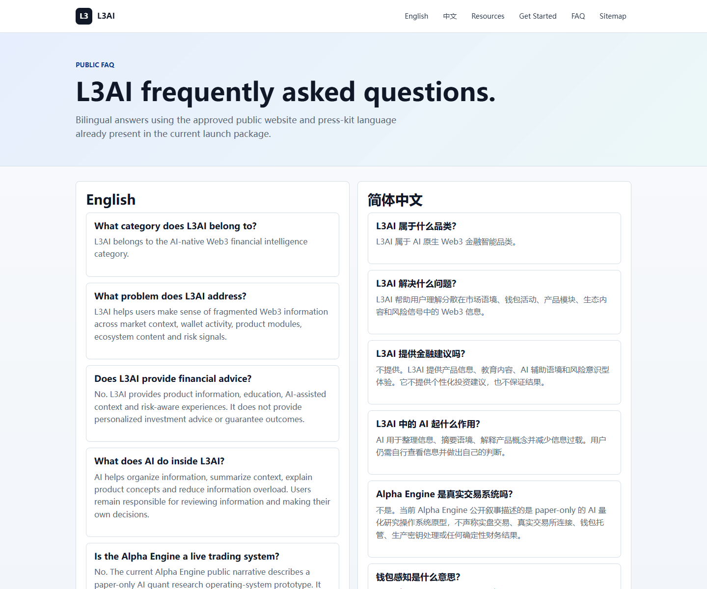

Claim control
No guaranteed returns, APY, asset price or exchange listing claims.
Security and trust
L3AI keeps unsupported claims, private implementation details, wallet signing, live trading and production data out of the public experience while keeping evidence and limitations visible.

Product modules
No guaranteed returns, APY, asset price or exchange listing claims.
No private keys, wallet balances, user data or protected configuration.
Manifest, quality report, link checks and public asset inventory.
Manual approval remains required for voice-over, certified recordings and campaigns.
Walkthrough
Make what L3AI does and does not do easy to find.
Expose public manifests, report links and resource inventory.
Move technical, legal or partner reviewers to the right materials.
Use contact/partner page when review needs a responsible owner.
Proof boundary
This public site does not execute external publishing, wallet signing, live trading, CDN upload, OSS upload or production system changes.
Continue the product journey